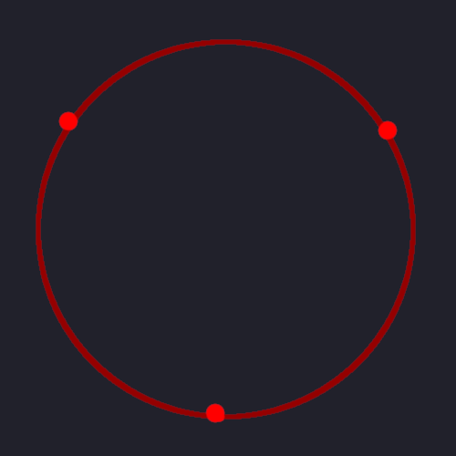

Hexagonal Groups in Hexagonal Tilings
Table of Contents
What da heckie is a hexagonal group in a hexagonal tiling?
A hexagonal tiling is when you take hexagons and arrange them in a regular tiling pattern like this!! 0_0

A hexagonal group in a hexagonal tiling is a group of those hexagon tiles which itself forms a hexagonal shape!! 0_0 Like this:
Notice how the orientation of the hexagonal shape formed by the group is in the opposite orientation as the tiles themselves! üßê
Hexagonal tiling coordinates
There are lots of different ways to devise a coordinate system for assigning coordinates to the hexagonal tiles in a tiling, but this is way we are gonna use:
Basically every tile’s coordinates consists of a horizontal component and a vertical component. Notice that the columns alternate being shifted vertically half the vertical length of a tile. This will be important to know for converting between these coordinates and euclidean coordinates! If our hexagonal tiling was oriented the other way, it would be the rows that alternated being shifted in the horizontal direction instead.
This isn’t even my favorite or what I would consider the prettiest coordinate system for hexagonal tilings, but it’s useful if you have a “rectangular section” of a hexagonal tiling, as depicted here.
TODO talk about other coordinate systems for hexagonal tilings
Tile space
Our tile space is the space of all points that correspond to the center of hexagon tile. Here I drew little red dots at the center of each tile to represent the points in this space:
I’ll draw lines between the points representing the neighborhoods for each point such that a neighbor of a point is another point that can be obtained by changing only one of the two coordinates by a distance of exactly 1:
This allows us to see the analog of manhattan distance in our tile space! We’ll call this our hexagonal manhattan distance! In hexagonal manhattan distance, you can see that (1, 1) is a distance of 1 away from (1, 2), and a distance of 2 away from (2, 2). (Just like standard manhattan distance in euclidean space!) This is visible here because the number of links you have to travel from any point to any other point is equivalent to our hexagonal manhattan distance.
You can see how the “fabric” of our tile space looks like a crumpled up paper version of the “fabric” of 2D euclidean space. XD Compare the following poorly drawn representations:
Hexagonal “fabric”:
Euclidean “fabric”:
It’s good to compare these because it makes it easy to see how to map between tile space and euclidean space! Which brings us to the next topic…
Mapping between tile space and Euclidean space
In order to figure out what actually constitutes a “hexagonal group” we have to think in the euclidean space that the hexagonal tiling is embedded in. The reason for this is because our concept of a hexagon is defined in terms of euclidean space. So we know that the “hexagonal group” that we form has to be “hexagonal” as seen from euclidean space!
To see what I mean, let’s consider what a hexagon is!
To see what a hexagon is, let’s consider what a regular polygon is!
To see what a regular polygon is, let’s consider what a polygon is!
(XD)
What da heckie is a polygon?
For our purposes, polygons are closed shapes on a plan consisting of all the space in between a closed loop of finite line segments.
Some random polygons:
Four polygons are shown here. One is a triangle, which is a polygon with 3 sides and 3 vertices. On the top right there is a heptagon, which has 7 sides and 7 vertices. On the bottom is a quadrilateral, which has 4 sides and 4 vertices. And on the right is another quadrilateral. The quadrilateral on the right is different from the one on the bottom, because the one on the right is a regular quadrilater, more commonly known as a square.
All of these are irregular polygons except for the square.
What da heckie is a regular polygon?
A regular polygon is a polygon all of whose angles are equivalent and all of whose sides are of the same length.
Here are some (poorly drawn) regular polygons!!
If you examine them closely, you can see that all of the sides are the same length and all the angles at each vertex are the same.
Here’s an example of that for the regular triangle:
(Again, it’s hand drawn so it’s not perfect, but just imagine it is XD)\
All regular triangles have interior angles of 60¬∞ and they always add up to 180¬∞! Not all regular triangles have sides of length 1 inch, but whatever length the sides do have, it’s going to be that length for all three of them.
Since this writing is about hexagons, here’s that same depiction for a hexagon:
All regular hexagons have interior angles of 120¬∞ and they always add up to 720¬∞! Again, not all regular hexagons have sides of length 2 inches as depicted here, but whatever that length is, it’s going to be the same for all 6 sides.
How do you know what the interior angles of any regular polygon is? There’s a formula for that!
The sum of all the interior angles of a regular polygon is this: 180° * (n - 2) where n is the number of sides or vertices of the polygon.
Actually, this doesn’t apply just to regular polygons, but to all polygons!
How wide then, is any one of the interior angles of a regular polygon? Since in a regular polygon all of those angles are the same, and we know what they add up to, and we know how many there are, then we know that any one of them is going to be the sum divided by how many there are! So we get this formula: 180° * (n - 2) / n.
So as you can see, in the case of a hexagon, we get this: 180° * (6 - 2) / 6 = 180° * 4 / 6 = 720° / 6 = 120°.
What da heckie do regular polygons haf ta do wif circles?
Did you know!? that the vertices of any regular polygon is contained within a circle?! I know, utterly unimaginable, right? 0_0
https://www.mathsisfun.com/definitions/radius-polygon-.html
Just kidding! It’s actually very imaginable, let me show you! :0
Take a circle:
And then!! take set of points from the circle such that every point is the same distance from each other, for example:

Or maybe:
Or even (our favorite):
And close the loop! And you get these baddies:
That’s right, it’s a regular triangle, a square (tilted for no reason), and a regular hexagon, all inside a circle!
Why do we care? Because this gives us a very elegant way to think about regular polygons! Namely this: to form any regular n-gon, take n equally spaced points on a circle and close the loop!
An important property to notice here is this: just as all of the interior angles of any regular polygon are equal, so too are the arc angles of the arcs delineated on the circle by the vertices of the polygon.
It’s natural to think of a regular polygon as a way of slicing up a circle into equal pie slices, like this:
How do we know what the arc angle is for any given regular hexagon? Well, the arc angle of the entire circle is of course 360°. And we are simply dividing that up into equal sized parts. So, for any circle containing the vertices of a regular n-gon, the arc angle of the arcs delineated by those vertices is 360° / n!
Knowing this, another more precise way we can think about how to form any regular polygon is this:
- Take any circle.
- Find the point that lies at its center.
- Form a line segment between this center point and any point on the circle.
- Note that the length of this line segment is the radius of the circle.
- Note the angle formed by this line segment with the horizontal axis.
- Form another line segment of the same length such that the angle form between them equals the arc length associated with the desired regular polygon.
- Repeat until all possible such line segments have been formed.
- Take the end points of each of these line segments that lie on the circle.
- Close the loop!
Here’s an example of each step in action. Let’s make a pentagon!:
Take any circle:
Find the point that lies at its center:

Form a line segment between this point and any point on the circle:
The associated arc length for a pentagon is 360° / 5 = 72°, so now we form another line segment such that the angle formed between them is 72°:
Repeat until we’ve formed all possible line segments such that each subsequent line segment has an angle of 72¬∞ between them:
Take just the end points of these line segments that lie on the circle and close the loop!:
And there’s a pentagon in blue!
- Radius of a regular polygon
If we know the radius of the circle containing the regular polygon, then we know the distance between the center of the polygon to any one of its vertices. We know this, because all of the points on a circle share the same exact distance from its center. And all of the points of our polygon are taken from this circle, therefore they also share this common distance from its center!
We care about this because it gives us a way to think about the spatial relationships of the tiles in our hexagonal tiling. (Which we’ll get back to soon!)
- TODO Apothem of a regular polygon
Similarly, we can find the apothem of a regular polygon.
The apothem [todo…]
TODO So what da heckie is a hexagon?
A hexagon is a regular 6-sided polygon. That means it consists (gosh im tired of writing ill write more later LOL)